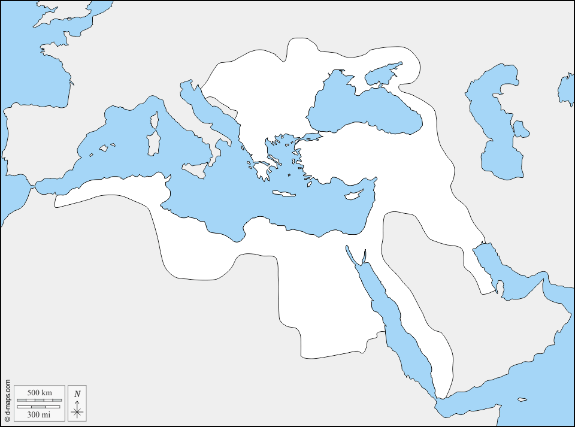
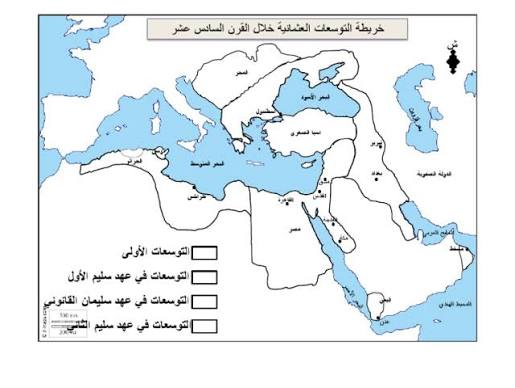

تمارين – توسع الإمبراطورية العثمانية وتنظيمها في القرن السادس عشر
- الإمبراطورية العثمانية:
- إمبراطورية إسلامية نشأت في الأناضول على يد عثمان الأول في أواخر القرن الثالث عشر الميلادي (1299م) بعد تفكك دولة السلاجقة الروم. تمكّنت من القضاء على الإمبراطورية البيزنطية والاستيلاء على القسطنطينية سنة 1453م، وبلغت أوج توسعها وقوتها في القرن السادس عشر الميلادي في عهد سليمان القانوني (1520-1566م)، حيث امتدت من أسوار فيينا شمالًا إلى سواحل اليمن وعمان جنوبًا، ومن العراق وغربي فارس شرقًا إلى بلاد المغرب العربي غربًا.
- الانكشارية (Janissaries):
- المشاة النظاميون في الجيش العثماني، وهم نخبة الجيش. يتم تجنيدهم من الأطفال المسيحيين الذين يُحوّلون إلى الإسلام ويُدرّبون تدريبًا عسكريًا صارمًا، وكانوا من أقوى الفرق العسكرية في العالم آنذاك.
- الصدر الأعظم (Grand Vizier):
- رئيس الوزراء في الدولة العثمانية، يمثل السلطان في إدارة شؤون الدولة ويشرف على باقي الوزراء. يُعدّ من أبرز مناصب الدولة العثمانية بعد السلطان.
- القانون نامه (Kanunnameh):
- القانون العثماني الذي وضعه سليمان القانوني، والذي جمع بين الشريعة الإسلامية والقوانين السلطانية. ومنح سليمان القانوني لقبه «القانوني» بسبب وضعه لهذا القانون.
| المحطة | التاريخ |
|---|---|
| فتح القسطنطينية | 1453 |
| معركة جالدران | 1514 |
| معركة مرج دابق والسيطرة على الشام | 1516 |
| إسقاط المماليك والسيطرة على مصر | 1517 |
| حصار فيينا | 1529 |
| ضم البصرة | 1547 |
| الاستيلاء على مسقط | 1551 |
| إلحاق تونس نهائيا | 1574 |
المصدر: معطيات الدرس حول التوسعات العثمانية في القرن السادس عشر


تمثّل الخريطة التوسعات العثمانية في القرن السادس عشر، حيث امتدت الإمبراطورية العثمانية على ثلاث قارات: في آسيا: الأناضول، الشام، العراق، الحجاز، عمان، الأحساء، وصولًا إلى البصرة وغربي فارس. في أوروبا: القسطنطينية (إستنبول)، البلقان، بلاد المجر، البوسنة والهرسك، صربيا، الأفلاق (رومانيا)، البغدان (مولدافيا)، وصولًا إلى أسوار فيينا (1529). في إفريقيا: مصر، تونس، الجزائر، وبلاد المغرب. حدود التوسع: من أسوار فيينا شمالًا (1529) إلى سواحل اليمن وعمان جنوبًا، ومن العراق وغربي فارس شرقًا إلى بلاد المغرب العربي غربًا. وقد مثّلت هذه التوسعات خطرًا كبيرًا على القوى الأوروبية، خاصة إسبانيا والبرتغال، مما جعل الإمبراطورية العثمانية قوة عالمية كبرى في القرن السادس عشر.
- مقدمة: تحديد سليمان القانوني كعاشر سلاطين الإمبراطورية العثمانية وأوج قوتها.
- تطوير: أولاً. التنظيم الإداري؛ ثانياً. التنظيم العسكري؛ ثالثاً. أثر التنظيم على قوة الإمبراطورية وتوسعها.
- خاتمة: التنظيم المحكم أساس قوة الإمبراطورية العثمانية وامتدادها.
مقدمة
يُعدّ سليمان القانوني (1520-1566) عاشر سلاطين الإمبراطورية العثمانية، وقد شهدت الإمبراطورية في عهده أوج توسعها وذروة قوتها. وقد قام هذا النجاح على تنظيم إداري وعسكري محكم، مكّن الإمبراطورية من التوسع في ثلاث قارات والاستمرار في مواجهة القوى الأوروبية.
تطوير
أولاً. التنظيم الإداري
قام التنظيم الإداري للدولة العثمانية على أسس مركزية محكمة، حيث يجمع السلطان بين السلطتين الدينية والزمنية، ويُعاونه في إدارة شؤون الدولة الصدر الأعظم (رئيس الوزراء) الذي يمثل السلطان ويشرف على باقي الوزراء، والديوان (المجلس الاستشاري الأعلى) الذي يضم كبار رجال الدولة لمناقشة القضايا الكبرى، والولاة الذين يحكمون الولايات (الإيالات) ويرجعون مباشرة إلى السلطان، والقضاة الذين يشرفون على العدالة وتطبيق الشريعة الإسلامية والقانون العثماني (القانون نامه). وقد وضع سليمان القانوني القانون نامه الذي جمع بين الشريعة الإسلامية والقوانين السلطانية، مما وفّر الاستقرار الداخلي ووحّد التشريعات في مختلف أنحاء الإمبراطورية.
ثانياً. التنظيم العسكري
اعتمدت الإمبراطورية العثمانية على جيش قوي ومنظّم كان من أقوى الجيوش في العالم آنذاك، وتكوّن من الجيش الانكشاري (المشاة النظاميون) الذين يُعدّون نخبة الجيش ويتم تجنيدهم من الأطفال المسيحيين الذين يُحوّلون إلى الإسلام ويُدرّبون تدريبًا عسكريًا صارمًا، والسباهية (الفرسان) الذين يحصلون على إقطاعات أرضية مقابل خدماتهم العسكرية، والأسطول البحري الهائل الذي ساهم في توسع الإمبراطورية في البحر المتوسط والبحر الأحمر والمحيط الهندي، وقد قاده خير الدين بربروس الذي تمكّن من إخضاع تونس والجزائر وطرد الإسبان من سواحل شمال إفريقيا.
ثالثاً. أثر التنظيم على قوة الإمبراطورية وتوسعها
كان لهذا التنظيم الإداري والعسكري المحكم أثر بالغ على قوة الإمبراطورية العثمانية وتوسعها. فقد وفّر الاستقرار الداخلي الذي ساعد على التوسع الخارجي، ومكّن الإمبراطورية من تحقيق انتصارات عسكرية متتالية: فتح القسطنطينية (1453)، معركة جالدران (1514)، معركة مرج دابق والسيطرة على الشام (1516)، إسقاط المماليك والسيطرة على مصر (1517)، حصار فيينا (1529)، ضم البصرة (1547)، الاستيلاء على مسقط (1551)، وإلحاق تونس نهائيا (1574). وهكذا امتدت الإمبراطورية العثمانية على ثلاث قارات، من أسوار فيينا شمالًا إلى سواحل اليمن وعمان جنوبًا، ومن العراق وغربي فارس شرقًا إلى بلاد المغرب العربي غربًا، مما جعلها قوة عالمية كبرى في القرن السادس عشر ومنافسًا خطيرًا للقوى الأوروبية في البحر المتوسط والطرق التجارية العالمية.
خاتمة
هكذا كان التنظيم الإداري والعسكري المحكم في عهد سليمان القانوني أساس قوة الإمبراطورية العثمانية وامتدادها الواسع في القرن السادس عشر، مما جعلها من أقوى الإمبراطوريات في التاريخ ومنافسًا خطيرًا للقوى الأوروبية.